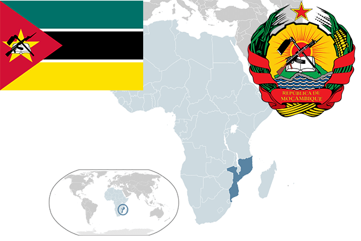

To`liq nomi: Mozambik Respublikasi
Region: Janubiy Sharqiy Afrika
Qonunchilik shakli: Prezidentlik respublika
Mustaqillik kuni: 25 iyun 1975 (Portugaliyadan)
Poytaxt: Maputu
Maydoni: 801,590 km²
Chegaradosh davlatlari: JAR, Zimbabve, Zambiya, Tanzaniya, Malavi
Aholisi: 28 829 476 (2016-yil)
Aholi zichligi: 36,7/ км²
Aholining o`rtacha yoshi: 55,41 yil
Rasmiy tili: Portugal
Dini: 24,25% mahalliy dinlar, 24% xristian, 17% islom
Pul birligi: metikal
Telefon prefiksi: +258
Internet domen: .mz
Xalqaro tashkilotlarga a`zoligi: BMT
Dengiz va okeanlarga chiqishi: Hind okeani
YIM: Butun: $ 11,2 mlrd.(2016-yil) Jon boshiga: $ 392
Yirik shaharlari: Maputu, Matola, Nampula, Beyra